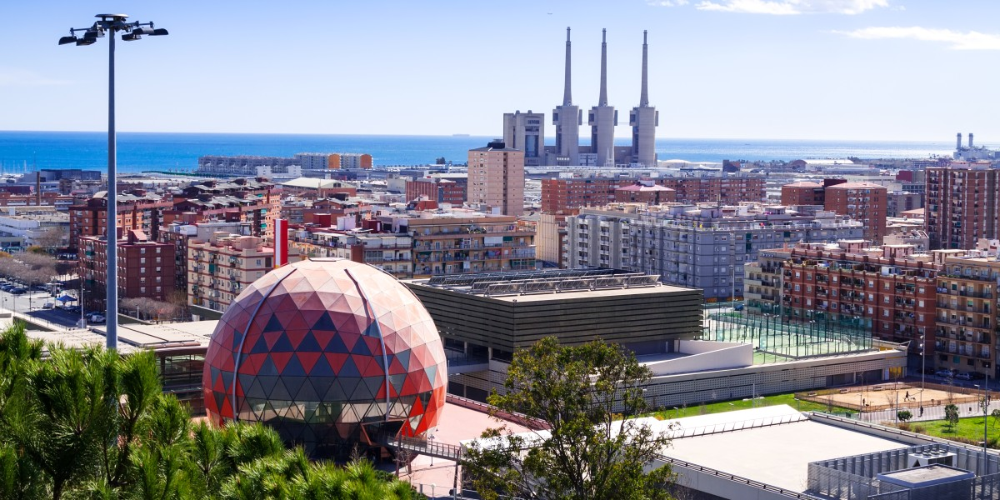

Nuestra empresa esta situada en Badalona
Nuestros trabajadores de estudio concertando reuniones para reuinir información

Nuestra empresa se especializa en la creación de blogs e informes detallados sobre el fútbol, brindando análisis profundos y actualizados sobre los eventos más importantes del deporte. Nos enfocamos en ofrecer contenido relevante tanto para aficionados como para expertos, cubriendo desde ligas locales hasta competiciones internacionales. Con un equipo de periodistas y analistas apasionados, garantizamos un enfoque único y fresco en cada publicación. Además, nuestro objetivo es mantener a los lectores informados con datos estadísticos, entrevistas exclusivas y opiniones de expertos. Cada informe está diseñado para ser una fuente confiable de información y entretenimiento. A través de nuestras plataformas digitales, buscamos conectar a la comunidad futbolística global